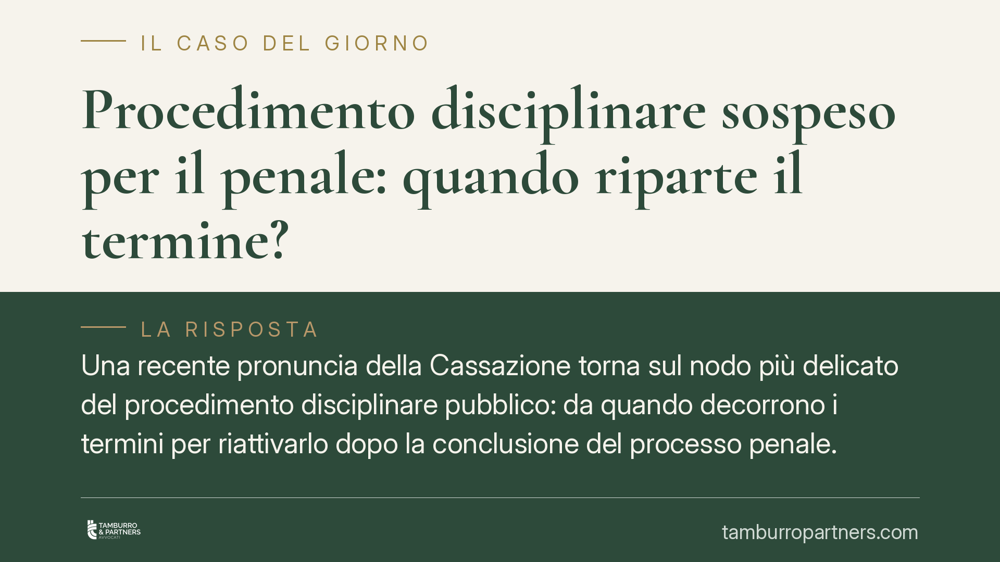

Procedimento disciplinare sospeso per il penale: quando riparte il termine?
Una recente pronuncia della Cassazione torna sul nodo più delicato del procedimento disciplinare pubblico: da quando decorrono i termini per riattivarlo dopo la conclusione del processo penale. La questione è tecnica ma decisiva, perché un errore sul calcolo del dies a quo può rendere illegittima, o viceversa pienamente valida, una sanzione gravissima come il licenziamento.

Il caso
Un docente della scuola pubblica viene sottoposto a procedimento disciplinare per condotte abusive nei confronti di un alunno minorenne. L'amministrazione sospende il procedimento in attesa dell'esito del giudizio penale, come consentito dalla legge. Intervenuta la condanna definitiva, l'amministrazione riattiva il disciplinare e dispone il licenziamento, anche a notevole distanza di tempo dai fatti.
Il lavoratore contesta la tardività: a suo dire, l'amministrazione avrebbe lasciato decorrere i termini per la ripresa del procedimento. La Cassazione, Sezione Lavoro, affronta quindi il punto cruciale: da quando scattano i termini per riattivare il disciplinare sospeso?
> Nota di verifica: il numero della pronuncia va confermato presso le fonti ufficiali prima di qualunque uso in sede giudiziale o consulenziale. In questa sede ci limitiamo all'analisi del principio di diritto applicato.
Inquadramento normativo
La disciplina di riferimento è l'art. 55-ter del D.Lgs. 165/2001, che regola i rapporti tra procedimento disciplinare e procedimento penale nel pubblico impiego.
Per gli illeciti più gravi l'amministrazione può sospendere il procedimento disciplinare in attesa della sentenza penale. Il meccanismo di ripresa è però scandito da termini precisi, ed è qui che si gioca la legittimità della sanzione.
Il comma 4 dell'art. 55-ter stabilisce che, una volta divenuta irrevocabile la sentenza penale, il procedimento disciplinare sospeso è ripreso entro sessanta giorni dalla comunicazione della sentenza all'amministrazione e concluso entro centottanta giorni dalla ripresa.
Il punto tecnico, spesso frainteso, è il dies a quo (il giorno da cui parte il conteggio): i termini non decorrono dal passaggio in giudicato in sé, ma dalla comunicazione della sentenza irrevocabile all'amministrazione. La comunicazione può provenire dalla cancelleria del giudice penale oppure dallo stesso dipendente, che ha l'onere di informare l'ente. Fino a quando questa comunicazione non avviene, i sessanta giorni non iniziano a correre.
Questo spiega perché un licenziamento possa risultare legittimo anche a distanza di molti anni dai fatti: ciò che conta non è il tempo trascorso in assoluto, ma il rispetto della sequenza 60 + 180 giorni a partire dalla comunicazione formale.
Implicazioni pratiche
Per il dipendente pubblico, la lezione è duplice.
Da un lato, il mero decorso del tempo non estingue la responsabilità disciplinare: la sospensione in attesa del penale "congela" la vicenda, che resta aperta finché l'amministrazione non riceve la comunicazione della sentenza definitiva.
Dall'altro, i termini di 60 e 180 giorni sono un presidio di garanzia reale. Se l'amministrazione, dopo aver ricevuto la comunicazione, lascia trascorrere i sessanta giorni senza riattivare il procedimento, oppure non lo conclude nei successivi centottanta, la sanzione può essere viziata.
La difesa, dunque, non deve concentrarsi sul tempo complessivo trascorso, ma ricostruire con precisione quando la sentenza è stata comunicata all'ente e verificare il rispetto dei termini a partire da quella data.
Per l'amministrazione, lo stesso principio impone rigore documentale: tracciare la data di ricezione della comunicazione e rispettare la scansione dei termini è condizione di tenuta del provvedimento.
Cosa fare in concreto
- Recuperate la data della comunicazione della sentenza penale irrevocabile all'amministrazione: è il punto da cui parte ogni calcolo.
- Verificate il termine di 60 giorni per la ripresa del procedimento dalla comunicazione: oltre tale soglia, valutate l'eccezione di tardività.
- Controllate il termine di 180 giorni per la conclusione del procedimento dalla data di ripresa.
- Conservate ogni atto con data certa (protocolli, PEC, notifiche), perché l'onere di ricostruire la cronologia è decisivo in giudizio.
- In presenza di un provvedimento espulsivo, è opportuna una valutazione tecnica tempestiva: i termini di impugnazione sono stringenti.
Considerazione finale
La vicenda conferma che, nel procedimento disciplinare del pubblico impiego, il fattore tempo va letto in chiave tecnica e non intuitiva. Non è il numero di anni trascorsi a fare la differenza, ma il rispetto della sequenza procedurale ancorata alla comunicazione della sentenza. Una ricostruzione cronologica accurata resta lo strumento più efficace, tanto per chi difende il lavoratore quanto per chi agisce in nome dell'amministrazione.
---
*Contributo informativo a cura di Tamburro & Partners Avvocati. Non costituisce parere legale.*
Ogni storia di lavoro ha i suoi tempi.
Se gestisci HR e vuoi un confronto su contenzioso, ispezioni o licenziamenti, scrivi allo studio. Ti rispondiamo entro un giorno lavorativo.